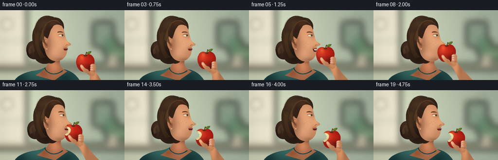
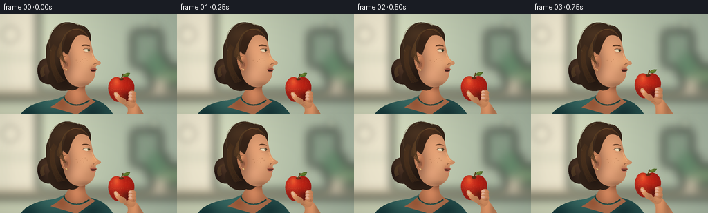

CODING AGENTS AS PIXEL WORLD MODELS
traex/GPT-6.1-Sol · motion_rationality_0006
点击播放 · 原生 RGB 像素
逐轮保存的候选
回放视频、检查图与代码变化。
每份候选均可单独播放。实际图片检查记录在下方工具轨迹中。
候选 01播放与检查图
点击播放 · 原生 RGB 像素


展开代码变化
--- 上一保存版本
+++ 本次保存版本
@@ -0,0 +1,261 @@
+from pathlib import Path
+import json, math
+import numpy as np
+from PIL import Image, ImageDraw, ImageFilter
+import artifact_io
+
+ROOT = Path(__file__).resolve().parent
+SPEC = json.loads((ROOT / 'task_spec.json').read_text())
+W, H, S = SPEC['width'], SPEC['height'], 3
+WW, HH = W*S, H*S
+Y, X = np.mgrid[0:HH,0:WW].astype(np.float32) / S
+rng = np.random.default_rng(26)
+GRAIN = rng.normal(0,0.65,(HH,WW)).astype(np.float32)
+
+def path_points(seq, dx=0, dy=0):
+ pts=[]; cur=None
+ for op in seq:
+ if op[0]=='M':
+ cur=np.array(op[1:3],float); pts.append(tuple(cur + [dx,dy]))
+ elif op[0]=='L':
+ cur=np.array(op[1:3],float); pts.append(tuple(cur+[dx,dy]))
+ elif op[0]=='C':
+ a=cur; b=np.array(op[1:3]); c=np.array(op[3:5]); d=np.array(op[5:7])
+ dist=np.linalg.norm(b-a)+np.linalg.norm(c-b)+np.linalg.norm(d-c)
+ for t in np.linspace(0,1,max(8,int(dist*1.6)))[1:]:
+ p=(1-t)**3*a+3*(1-t)**2*t*b+3*(1-t)*t*t*c+t**3*d
+ pts.append(tuple(p+[dx,dy]))
+ cur=d
+ return pts
+
+def mask_path(seq, dx=0,dy=0):
+ m=Image.new('L',(WW,HH)); d=ImageDraw.Draw(m)
+ d.polygon([(round(x*S),round(y*S)) for x,y in path_points(seq,dx,dy)],fill=255)
+ return m
+
+def line(im, seq, fill, width=1, dx=0,dy=0):
+ pts=path_points(seq,dx,dy)
+ ImageDraw.Draw(im).line([(round(x*S),round(y*S)) for x,y in pts],fill=fill,width=max(1,round(width*S)),joint='curve')
+
+def ellipse(im, xy, fill):
+ ImageDraw.Draw(im).ellipse(tuple(round(v*S) for v in xy),fill=fill)
+
+def flat(im, seq, color, dx=0,dy=0):
+ m=mask_path(seq,dx,dy); im.paste(color,(0,0),m)
+
+def shade(im, seq, base, effects=(), dx=0,dy=0, noise=0.4):
+ m=mask_path(seq,dx,dy)
+ # Broad reflected light and local form shading, in linear-looking painterly space.
+ rgb=np.zeros((HH,WW,3),np.float32)+np.array(base,dtype=np.float32)
+ for cx,cy,rx,ry,col in effects:
+ z=np.exp(-(((X-cx-dx)/rx)**2+((Y-cy-dy)/ry)**2)*1.7)
+ rgb+=z[:,:,None]*np.array(col,dtype=np.float32)
+ rgb+=GRAIN[:,:,None]*noise
+ img=Image.fromarray(np.clip(rgb,0,255).astype('uint8'))
+ im.paste(img,(0,0),m)
+ return m
+
+def soft_ellipse(im, box, color, blur):
+ layer=Image.new('RGBA',(WW,HH))
+ ImageDraw.Draw(layer).ellipse(tuple(int(v*S) for v in box),fill=color)
+ layer=layer.filter(ImageFilter.GaussianBlur(blur*S))
+ im.paste(layer,(0,0),layer)
+
+# Shallow-focus sunlit interior: no sharp distracting objects behind the action.
+def background():
+ warm=np.zeros((HH,WW,3),np.float32)+[182,189,164]
+ light=np.exp(-(((X-23)/125)**2+((Y-35)/135)**2))
+ warm+=light[:,:,None]*np.array([42,40,34])
+ warm+=(X/256)[:,:,None]*np.array([-18,-10,-5])
+ im=Image.fromarray(np.clip(warm,0,255).astype('uint8'))
+ b=Image.new('RGBA',(WW,HH));d=ImageDraw.Draw(b)
+ d.rectangle([0,0,55*S,115*S],fill=(240,233,209,255))
+ d.rectangle([5*S,0,8*S,114*S],fill=(208,212,186,255))
+ d.rectangle([0,61*S,54*S,65*S],fill=(197,202,176,255))
+ d.rectangle([0,112*S,WW,122*S],fill=(170,158,129,255))
+ d.rectangle([191*S,24*S,233*S,75*S],fill=(136,155,134,255))
+ d.ellipse([210*S,55*S,244*S,94*S],fill=(103,137,108,255))
+ d.ellipse([232*S,75*S,270*S,104*S],fill=(118,145,111,255))
+ d.rectangle([219*S,93*S,242*S,121*S],fill=(197,187,163,255))
+ b=b.filter(ImageFilter.GaussianBlur(7*S)); im.paste(b,(0,0),b)
+ for x,y,r,c in [(15,29,12,(255,247,219,55)),(223,15,8,(246,239,195,35)),(250,65,6,(231,237,197,32))]:
+ soft_ellipse(im,(x-r,y-r,x+r,y+r),c,5)
+ return im
+BG=background()
+
+HAIR=[('M',112,15),('C',91,5,77,16,72,34),('C',62,49,67,70,72,83),('C',63,97,80,116,100,109),('C',114,113,122,98,118,83),('C',125,59,138,34,127,22),('C',123,16,118,15,112,15)]
+BUN=[('M',76,64),('C',58,59,51,75,55,88),('C',56,100,73,106,83,96),('C',95,83,89,66,76,64)]
+NECK=[('M',97,90),('C',106,97,121,99,124,99),('C',121,111,123,119,138,126),('L',111,145),('L',73,134),('C',98,120,103,108,97,90)]
+SHIRT=[('M',94,117),('C',91,128,107,131,118,128),('C',126,124,128,122,132,122),('C',155,127,163,143,168,153),('L',27,153),('C',29,137,48,129,67,125),('C',80,124,87,121,94,117)]
+
+# Portrait is built from continuous surfaces. The only changing facial contour is the jaw.
+def face_path(gap):
+ return [('M',104,24),('C',113,23,125,27,129,36),('C',132,41,132,47,134,53),
+ ('C',135,60,138,65,144,68),('C',147,70,146,72,142,73),
+ ('C',139,74,138,75,138.5,77.8),('C',139.2,78.4,140.5,79.1,139.4,80.2),
+ ('L',134.7,81.2),('L',134.2,82.4+gap),('C',137.3,82.8+gap,139.3,83.1+gap,137.2,85.2+gap),
+ ('C',137.6,91.6+gap*.65,131.9,100.4+gap*.5,123.3,103.4+gap*.35),
+ ('C',112,108,101,102,96,93),('C',91,83,89,68,91,53),('C',94,37,98,29,104,24)]
+
+
+def portrait(im, dx,dy,gap,chew,t):
+ shade(im,SHIRT,(36,76,74),[(89,127,60,18,(19,30,26)),(40,143,24,21,(-17,-25,-21)),(132,140,25,21,(-17,-29,-25))])
+ # Fine knit, fitted to the garment mask.
+ knit=Image.new('RGBA',(WW,HH));kd=ImageDraw.Draw(knit)
+ for y in np.arange(123,151,1.2):
+ kd.line([(24*S,y*S),(160*S,(y+7)*S)],fill=(105,142,121,23),width=1)
+ knit.putalpha(Image.fromarray((np.array(knit.getchannel('A'),float)*np.array(mask_path(SHIRT))/255).astype('uint8')))
+ im.paste(knit,(0,0),knit)
+ shade(im,NECK,(167,105,72),[(111,114,14,21,(46,31,23)),(118,102,10,10,(-43,-30,-21)),(89,129,14,12,(-14,-17,-16))],dx=dx,dy=dy)
+ line(im,[('M',92,119),('C',94,129,112,138,129,124)],(24,59,56),2)
+ line(im,[('M',91,121),('C',97,132,114,136,130,125)],(87,115,97),.7)
+ shade(im,BUN,(44,31,24),[(68,77,15,20,(32,21,13)),(58,87,10,11,(-15,-12,-7))],dx=dx,dy=dy)
+ for i in range(18):
+ a=i*.65
+ line(im,[('M',60+a*.45,91-a*.3),('C',51+a*.4,72-a*.2,78+a*.1,64+a*.65,84-a*.12,85+a*.35)],(73+i%3*5,51+i%4*3,32+i%4*2),.35,dx,dy)
+ shade(im,HAIR,(50,35,25),[(93,28,26,18,(24,16,9)),(77,58,16,25,(13,9,5)),(93,91,19,22,(-16,-12,-8))],dx=dx,dy=dy)
+ # Cast shadow on skin behind the jaw.
+ shade(im,face_path(gap),(192,132,95),[(115,50,24,30,(35,28,22)),(125,70,17,18,(21,22,17)),(112,87+gap,18,17,(27,23,21)),(96,68,12,36,(-42,-31,-20)),(124,102,17,6,(-33,-25,-18)),(137,66,8,11,(21,15,6)),(134,78,6,5,(-17,-22,-17)),(130,51,8,7,(-20,-17,-13))],dx=dx,dy=dy,noise=.85)
+ # Ear, helix and concha.
+ ear=[('M',96,57),('C',86,53,86,63,88,72),('C',90,80,95,86,100,78),('C',103,70,101,59,96,57)]
+ shade(im,ear,(184,118,83),[(93,62,5,6,(32,25,16)),(95,72,4,7,(-43,-28,-15))],dx=dx,dy=dy)
+ line(im,[('M',95,61),('C',89,59,89,67,92,72),('C',95,68,98,68,97,75)],(131,79,54),.8,dx,dy)
+ line(im,[('M',91,61),('C',88,67,91,78,95,79)],(224,161,113),.65,dx,dy)
+ ellipse(im,(95+dx,79+dy,97+dx,81+dy),(212,177,112))
+ ellipse(im,(95.2+dx,79+dy,96.1+dx,79.8+dy),(255,230,174))
+ # Hairline sweeping naturally back away from the forehead.
+ front=[('M',101,22),('C',108,18,125,22,128,33),('C',119,27,110,29,108,35),('C',103,40,102,49,98,58),('C',94,58,93,53,90,53),('C',94,34,96,29,101,22)]
+ shade(im,front,(53,35,24),[(108,26,17,11,(21,12,6))],dx=dx,dy=dy)
+ for i in range(24):
+ r=i/23
+ line(im,[('M',126-r*8,29-r*8),('C',111-r*14,8+r*9,85-r*7,30+r*4,82+r*14,60+r*13)],(83+(i%3)*4,55+(i%4)*3,33+(i%3)*2),.30,dx,dy)
+ for i in range(14):
+ r=i/14
+ line(im,[('M',77+r*6,43+r*5),('C',67+r*6,57+r*4,73+r*11,86+r*4,84+r*11,99-r*3)],(73+i%4*3,48+i%3*3,29),.32,dx,dy)
+ line(im,[('M',127,32),('C',124,25,110,18,102,23)],(137,92,55),.42,dx,dy)
+ # Sparse flyaway strands pick up window light.
+ line(im,[('M',74,53),('C',66,38,74,15,88,14)],(104,82,54),.32,dx,dy)
+ line(im,[('M',85,19),('C',93,9,114,11,123,20)],(122,95,61),.28,dx,dy)
+ # Eyebrow, eyelid and an iris turned toward the fruit.
+ brow=[('M',118,45),('C',121,42.5,128,43.6,130,46),('C',127,45.5,122,45,118,46)]
+ flat(im,brow,(85,52,32),dx,dy)
+ eye=[('M',120,51),('C',123,48.9,128,49.5,130.6,52),('C',127,54,123,54.5,120,51)]
+ flat(im,eye,(230,213,179),dx,dy)
+ ellipse(im,(126.5+dx,49.9+dy,129.6+dx,53.3+dy),(85,80,47))
+ ellipse(im,(128+dx,50.3+dy,129.5+dx,53.1+dy),(34,33,24))
+ ellipse(im,(128+dx,50.4+dy,128.6+dx,51.1+dy),(250,241,210))
+ line(im,[('M',119.8,51),('C',123,48.4,127.5,49.3,130.5,51.8)],(74,46,30),.75,dx,dy)
+ line(im,[('M',121,55.2),('C',124,56,127.5,55,129,54.1)],(164,107,78),.4,dx,dy)
+ for a in range(3):
+ line(im,[('M',129-a*.7,50.7-a*.4),('L',130-a*.5,49.6-a*.3)],(73,48,29),.3,dx,dy)
+ # Nose bridge lit by the window, nostril shadow and restrained cheek detail.
+ line(im,[('M',132.6,56),('C',134,62,137.5,66.8,140.8,68.8)],(241,178,127),.8,dx,dy)
+ line(im,[('M',139.4,71.7),('C',137.2,70.6,134.8,71.7,135.5,73.5)],(119,73,49),.75,dx,dy)
+ line(im,[('M',132,76),('C',130.5,78.5,131,80.2,131.8,81.2)],(166,100,71),.45,dx,dy)
+ # Tiny fixed freckles add skin variation without changing identity.
+ for xx,yy,r in [(119,65,.25),(116,68,.22),(123,64,.24),(112,70,.2),(121,70,.25),(126,67,.2),(110,66,.18)]:
+ ellipse(im,(xx-r+dx,yy-r+dy,xx+r+dx,yy+r+dy),(177,118,80))
+ # Mouth cavity remains visibly between lips while the fruit is being bitten.
+ mouth=[('M',130.5,80),('C',134,78.8,137,79,139.4,80.2),('L',137.7,82+gap),('C',135,83.5+gap,132,83+gap,130.5,80)]
+ flat(im,mouth,(66,34,27),dx,dy)
+ if gap>.85:
+ teeth=[('M',133,80),('L',139,80.3),('L',138.2,82.1),('C',136.8,82.4,134.5,82.3,133.3,81.6)]
+ flat(im,teeth,(247,233,201),dx,dy)
+ line(im,[('M',136.3,80.3),('L',136.1,81.9)],(210,195,164),.25,dx,dy)
+ upper=[('M',130,79.5),('C',134,77.7,136,77.4,138.6,78.6),('L',139.6,80.2),('C',136,79.7,133.5,80.3,130,79.5)]
+ flat(im,upper,(153,80,64),dx,dy)
+ lower=[('M',131,82.2+gap),('C',134,83+gap,136.6,82.5+gap,138.5,82.2+gap),('C',138.5,84.5+gap,133.6,85.3+gap,131,82.2+gap)]
+ flat(im,lower,(190,111,88),dx,dy)
+ line(im,[('M',132.8,84+gap),('C',134.8,84.5+gap,136.3,84+gap,137,83.7+gap)],(224,149,114),.5,dx,dy)
+ if chew:
+ line(im,[('M',126,88),('C',129,89+chew,129,92+chew,127,95)],(182,117,82),.4,dx,dy)
+
+
+def arm(im,cx,cy):
+ # The same hand and forearm translate continuously with the fruit.
+ a=[('M',cx+14,cy+13),('C',cx+24,cy+20,cx+34,cy+38,211,151),('L',179,151),('C',cx+15,cy+29,cx+8,cy+25,cx+3,cy+20),('L',cx+14,cy+13)]
+ shade(im,a,(187,125,86),[(cx+19,cy+29,11,30,(39,27,19)),(cx+28,cy+27,7,23,(-24,-17,-12))])
+ palm=[('M',cx+6,cy+5),('C',cx+19,cy,cx+25,cy+11,cx+20,cy+24),('C',cx+17,cy+30,cx+8,cy+29,cx+2,cy+20),('C',cx-3,cy+13,cx-1,cy+9,cx+6,cy+5)]
+ shade(im,palm,(194,128,87),[(cx+14,cy+14,11,13,(26,21,15)),(cx+5,cy+17,7,10,(-29,-17,-9))])
+
+APPLE=[('M',0,-15),('C',5,-19,12,-18,16,-12),('C',23,-3,17,10,11,16),('C',7,20,3,18,0,17),('C',-4,19,-8,19,-12,15),('C',-18,9,-21,-3,-16,-11),('C',-13,-18,-5,-19,0,-15)]
+BITTEN=[('M',0,-15),('C',5,-19,12,-18,16,-12),('C',23,-3,17,10,11,16),('C',7,20,3,18,0,17),('C',-4,19,-8,19,-12,15),('C',-15,12,-17,7,-17,3),('C',-15,3,-13,2,-13,0),('C',-10,0,-9,-2,-10,-4),('C',-8,-5,-9,-8,-12,-9),('C',-11,-11,-13,-13,-15,-13),('C',-11,-18,-5,-19,0,-15)]
+FLESH=[('M',-15,-13),('C',-12,-15,-6,-12,-5,-9),('C',-3,-5,-6,1,-10,4),('C',-13,6,-16,6,-17,3),('C',-15,3,-13,2,-13,0),('C',-10,0,-9,-2,-10,-4),('C',-8,-5,-9,-8,-12,-9),('C',-11,-11,-13,-13,-15,-13)]
+
+def apple_and_fingers(im,cx,cy,bitten):
+ seq=BITTEN if bitten else APPLE
+ am=shade(im,seq,(155,28,21),[(-8,-7,14,15,(72,34,17)),(8,-4,11,14,(27,2,-2)),(10,12,12,11,(-65,-7,-3)),(-11,8,8,10,(-12,-2,0)),(-1,13,10,7,(4,8,-1)),(-7,-11,5,6,(21,31,11))],dx=cx,dy=cy,noise=.9)
+ # Small lenticels and fine red streaks are locked to the moving skin.
+ detail=Image.new('RGBA',(WW,HH));dd=ImageDraw.Draw(detail)
+ arng=np.random.default_rng(137)
+ for i in range(160):
+ x,y=arng.uniform(-19,19),arng.uniform(-18,19)
+ r=arng.uniform(.13,.28)
+ dd.ellipse(((cx+x-r)*S,(cy+y-r)*S,(cx+x+r)*S,(cy+y+r)*S),fill=(242,161,78,55 if x<1 else 30))
+ for i in range(14):
+ x=-14+i*2.05
+ line(detail,[('M',cx+x,cy-13),('C',cx+x-1,cy-6,cx+x+2,cy+3,cx+x*.8,cy+13)],(249,98,47,24),.22)
+ alpha=np.array(detail.getchannel('A')).astype(float)*np.array(am)/255
+ detail.putalpha(Image.fromarray(alpha.astype('uint8')));im.paste(detail,(0,0),detail)
+ # Broad, diffused glint on glossy peel, not a white drawn circle.
+ gl=Image.new('RGBA',(WW,HH)); soft_ellipse(gl,(cx-13,cy-12,cx-6,cy-4),(255,231,168,89),1.7)
+ ga=np.array(gl.getchannel('A')).astype(float)*np.array(am)/255
+ gl.putalpha(Image.fromarray(ga.astype('uint8')));im.paste(gl,(0,0),gl)
+ if bitten:
+ shade(im,FLESH,(235,211,151),[(-11,-8,6,6,(20,21,22)),(-8,1,5,3,(-31,-22,-16))],dx=cx,dy=cy,noise=.5)
+ line(im,[('M',-15,-13),('C',-12,-15,-6,-12,-5,-9),('C',-3,-5,-6,1,-10,4)],(173,68,35),.65,cx,cy)
+ for xx,yy in [(-8,-7),(-10,-10),(-8,-3),(-11,1)]:
+ ellipse(im,(cx+xx-.25,cy+yy-.2,cx+xx+.25,cy+yy+.2),(221,192,127))
+ # Stem, top dimple, and a small olive leaf make fruit identity unambiguous.
+ ellipse(im,(cx-3,cy-16,cx+4,cy-13),(89,44,21))
+ line(im,[('M',cx+.3,cy-15),('C',cx+1,cy-18,cx+2.8,cy-19,cx+2.6,cy-22)],(80,57,30),1.7)
+ line(im,[('M',cx-.1,cy-15),('C',cx+.5,cy-18,cx+1.8,cy-19,cx+1.6,cy-21)],(140,112,60),.55)
+ leaf=[('M',cx+2,cy-19),('C',cx+7,cy-25,cx+13,cy-23,cx+13,cy-23),('C',cx+11,cy-17,cx+7,cy-17,cx+2,cy-19)]
+ shade(im,leaf,(68,98,37),[(cx+7,cy-21,5,3,(37,31,10))])
+ line(im,[('M',cx+3,cy-19.2),('L',cx+11,cy-22)],(142,149,68),.35)
+ # Visible pads curl around the lower fruit, never detach from the palm.
+ for i in range(3):
+ yy=cy+6+i*4.2; xx=cx+13-i*.2
+ finger=[('M',xx+8,yy+4),('C',xx+11,yy-1,xx+5,yy-5,xx,yy-3),('C',xx-4,yy-1,xx-3,yy+3,xx+1,yy+4),('C',xx+4,yy+6,xx+7,yy+6,xx+8,yy+4)]
+ shade(im,finger,(197,130,89),[(xx+1,yy,5,3,(37,26,20)),(xx+7,yy+4,5,3,(-17,-14,-10))])
+ nail=[('M',xx-1,yy-2),('C',xx+1,yy-3,xx+3,yy-2,xx+3,yy),('C',xx+3,yy+1.7,xx+1,yy+2,xx-1,yy+1),('C',xx-2,yy,xx-2,yy-1,xx-1,yy-2)]
+ shade(im,nail,(219,167,141),[(xx,yy-1,3,2,(17,18,16))])
+ line(im,[('M',xx+5,yy+1),('C',xx+6,yy+2,xx+6,yy+3,xx+5,yy+4)],(160,99,64),.35)
+ thumb=[('M',cx+6,cy+22),('C',cx+1,cy+23,cx-5,cy+18,cx-9,cy+11),('C',cx-12,cy+7,cx-10,cy+3,cx-7,cy+4),('C',cx-4,cy+6,cx-2,cy+12,cx+3,cy+13),('C',cx+7,cy+14,cx+9,cy+18,cx+6,cy+22)]
+ shade(im,thumb,(201,135,92),[(cx-6,cy+9,5,7,(35,26,19)),(cx+4,cy+18,6,7,(-17,-10,-5))])
+ thumb_nail=[('M',cx-9.5,cy+6),('C',cx-8,cy+4.7,cx-5.5,cy+7,cx-4.5,cy+9),('L',cx-6,cy+11),('C',cx-8,cy+10,cx-9.5,cy+8,cx-9.5,cy+6)]
+ shade(im,thumb_nail,(229,181,148),[(cx-8,cy+6,2,3,(11,13,14))])
+ line(im,[('M',cx+5,cy+23),('C',cx+9,cy+23,cx+11,cy+24,cx+12,cy+25)],(161,98,62),.4)
+
+
+def smooth(a):
+ a=np.clip(a,0,1);return a*a*(3-2*a)
+
+def render(i):
+ t=i/SPEC['fps']
+ # Hold, lift, open, engage teeth, withdraw, and chew: one continuous action.
+ lift=smooth((t-.25)/1.5)
+ withdraw=smooth((t-2.8)/1.1)
+ cx=175-25*lift+19*withdraw
+ cy=108-20*lift+13*withdraw
+ lean=2.0*smooth((t-.9)/1.0)*(1-.85*withdraw)
+ dx=lean;dy=.35*math.sin(t*1.4)
+ gap=4.1*smooth((t-.75)/.85)*(1-smooth((t-2.1)/.65))
+ chewing = max(0, math.sin((t-3.15)*8))*0.9 if t>3.15 else 0
+ if t>3.2: gap+=.25*chewing
+ bitten=t>=2.5
+ im=BG.copy()
+ portrait(im,dx,dy,gap,chewing,t)
+ arm(im,cx,cy)
+ apple_and_fingers(im,cx,cy,bitten)
+ # Film-like color finish and gentle corner falloff, downsampled for clean silhouettes.
+ arr=np.asarray(im).astype(np.float32)
+ vignette=np.clip(1-.085*(((X-127)/174)**2+((Y-68)/115)**2),.87,1)
+ arr*=vignette[:,:,None]
+ im=Image.fromarray(np.clip(arr,0,255).astype('uint8')).resize((W,H),Image.Resampling.LANCZOS)
+ return np.asarray(im,dtype=np.uint8)
+
+if __name__=='__main__':
+ frames=np.stack([render(i) for i in range(SPEC['frames'])])
+ artifact_io.save(frames,ROOT)
+ print(f'Saved {len(frames)} RGB frames at {W}x{H}, {SPEC["fps"]} fps.')
可观测工具轨迹
实际执行的命令与返回图片。
命令 1exit 0
/bin/bash -lc 'ls -la && cat prompt.txt && cat GENERATION_RULES.md && cat task_spec.json'
命令 2exit 0
/bin/bash -lc "cat artifact_io.py && python - <<'PY'
import PIL,numpy
print('PIL', PIL.__version__)
PY"命令 3exit 0
/bin/bash -lc "cat > generate.py <<'PY'
from pathlib import Path
import json, math
import numpy as np
from PIL import Image, ImageDraw, ImageFilter
import artifact_io
ROOT = Path(__file__).resolve().parent
SPEC = json.loads((ROOT / 'task_spec.json').read_text())
W, H, S = SPEC['width'], SPEC['height'], 3
WW, HH = W*S, H*S
Y, X = np.mgrid[0:HH,0:WW].astype(np.float32) / S
rng = np.random.default_rng(26)
GRAIN = rng.normal(0,0.65,(HH,WW)).astype(np.float32)
def path_points(seq, dx=0, dy=0):
pts=[]; cur=None
for op in seq:
if op[0]=='M':
cur=np.array(op[1:3],float); pts.append(tuple(cur + [dx,dy]))
elif op[0]=='L':
cur=np.array(op[1:3],float); pts.append(tuple(cur+[dx,dy]))
elif op[0]=='C':
a=cur; b=np.array(op[1:3]); c=np.array(op[3:5]); d=np.array(op[5:7])
dist=np.linalg.norm(b-a)+np.linalg.norm(c-b)+np.linalg.norm(d-c)
for t in np.linspace(0,1,max(8,int(dist*1.6)))[1:]:
p=(1-t)**3*a+3*(1-t)**2*t*b+3*(1-t)*t*t*c+t**3*d
pts.append(tuple(p+[dx,dy]))
cur=d
return pts
def mask_path(seq, dx=0,dy=0):
m=Image.new('L',(WW,HH)); d=ImageDraw.Draw(m)
d.polygon([(round(x*S),round(y*S)) for x,y in path_points(seq,dx,dy)],fill=255)
return m
def line(im, seq, fill, width=1, dx=0,dy=0):
pts=path_points(seq,dx,dy)
ImageDraw.Draw(im).line([(round(x*S),round(y*S)) for x,y in pts],fill=fill,width=max(1,round(width*S)),joint='curve')
def ellipse(im, xy, fill):
ImageDraw.Draw(im).ellipse(tuple(round(v*S) for v in xy),fill=fill)
def flat(im, seq, color, dx=0,dy=0):
m=mask_path(seq,dx,dy); im.paste(color,(0,0),m)
def shade(im, seq, base, effects=(), dx=0,dy=0, noise=0.4):
m=mask_path(seq,dx,dy)
# Broad reflected light and local form shading, in linear-looking painterly space.
rgb=np.zeros((HH,WW,3),np.float32)+np.array(base,dtype=np.float32)
for cx,cy,rx,ry,col in effects:
z=np.exp(-(((X-cx-dx)/rx)**2+((Y-cy-dy)/ry)**2)*1.7)
rgb+=z[:,:,None]*np.array(col,dtype=np.float32)
rgb+=GRAIN[:,:,None]*noise
img=Image.fromarray(np.clip(rgb,0,255).astype('uint8'))
im.paste(img,(0,0),m)
return m
def soft_ellipse(im, box, color, blur):
layer=Image.new('RGBA',(WW,HH))
ImageDraw.Draw(layer).ellipse(tuple(int(v*S) for v in box),fill=color)
layer=layer.filter(ImageFilter.GaussianBlur(blur*S))
im.paste(layer,(0,0),layer)
# Shallow-focus sunlit interior: no sharp distracting objects behind the action.
def background():
warm=np.zeros((HH,WW,3),np.float32)+[182,189,164]
light=np.exp(-(((X-23)/125)**2+((Y-35)/135)**2))
warm+=light[:,:,None]*np.array([42,40,34])
warm+=(X/256)[:,:,None]*np.array([-18,-10,-5])
im=Image.fromarray(np.clip(warm,0,255).astype('uint8'))
b=Image.new('RGBA',(WW,HH));d=ImageDraw.Draw(b)
d.rectangle([0,0,55*S,115*S],fill=(240,233,209,255))
d.rectangle([5*S,0,8*S,114*S],fill=(208,212,186,255))
d.rectangle([0,61*S,54*S,65*S],fill=(197,202,176,255))
d.rectangle([0,112*S,WW,122*S],fill=(170,158,129,255))
d.rectangle([191*S,24*S,233*S,75*S],fill=(136,155,134,255))
d.ellipse([210*S,55*S,244*S,94*S],fill=(103,137,108,255))
d.ellipse([232*S,75*S,270*S,104*S],fill=(118,145,111,255))
d.rectangle([219*S,93*S,242*S,121*S],fill=(197,187,163,255))
b=b.filter(ImageFilter.GaussianBlur(7*S)); im.paste(b,(0,0),b)
for x,y,r,c in [(15,29,12,(255,247,219,55)),(223,15,8,(246,239,195,35)),(250,65,6,(231,237,197,32))]:
soft_ellipse(im,(x-r,y-r,x+r,y+r),c,5)
return im
BG=background()
HAIR=[('M',112,15),('C',91,5,77,16,72,34),('C',62,49,67,70,72,83),('C',63,97,80,116,100,109),('C',114,113,122,98,118,83),('C',125,59,138,34,127,22),('C',123,16,118,15,112,15)]
BUN=[('M',76,64),('C',58,59,51,75,55,88),('C',56,100,73,106,83,96),('C',95,83,89,66,76,64)]
NECK=[('M',97,90),('C',106,97,121,99,124,99),('C',121,111,123,119,138,126),('L',111,145),('L',73,134),('C',98,120,103,108,97,90)]
SHIRT=[('M',94,117),('C',91,128,107,131,118,128),('C',126,124,128,122,132,122),('C',155,127,163,143,168,153),('L',27,153),('C',29,137,48,129,67,125),('C',80,124,87,121,94,117)]
# Portrait is built from continuous surfaces. The only changing facial contour is the jaw.
def face_path(gap):
return [('M',104,24),('C',113,23,125,27,129,36),('C',132,41,132,47,134,53),
('C',135,60,138,65,144,68),('C',147,70,146,72,142,73),
('C',139,74,138,75,138.5,77.8),('C',139.2,78.4,140.5,79.1,139.4,80.2),
('L',134.7,81.2),('L',134.2,82.4+gap),('C',137.3,82.8+gap,139.3,83.1+gap,137.2,85.2+gap),
('C',137.6,91.6+gap*.65,131.9,100.4+gap*.5,123.3,103.4+gap*.35),
('C',112,108,101,102,96,93),('C',91,83,89,68,91,53),('C',94,37,98,29,104,24)]
def portrait(im, dx,dy,gap,chew,t):
shade(im,SHIRT,(36,76,74),[(89,127,60,18,(19,30,26)),(40,143,24,21,(-17,-25,-21)),(132,140,25,21,(-17,-29,-25))])
# Fine knit, fitted to the garment mask.
knit=Image.new('RGBA',(WW,HH));kd=ImageDraw.Draw(knit)
for y in np.arange(123,151,1.2):
kd.line([(24*S,y*S),(160*S,(y+7)*S)],fill=(105,142,121,23),width=1)
knit.putalpha(Image.fromarray((np.array(knit.getchannel('A'),float)*np.array(mask_path(SHIRT))/255).astype('uint8')))
im.paste(knit,(0,0),knit)
shade(im,NECK,(167,105,72),[(111,114,14,21,(46,31,23)),(118,102,10,10,(-43,-30,-21)),(89,129,14,12,(-14,-17,-16))],dx=dx,dy=dy)
line(im,[('M',92,119),('C',94,129,112,138,129,124)],(24,59,56),2)
line(im,[('M',91,121),('C',97,132,114,136,130,125)],(87,115,97),.7)
shade(im,BUN,(44,31,24),[(68,77,15,20,(32,21,13)),(58,87,10,11,(-15,-12,-7))],dx=dx,dy=dy)
for i in range(18):
a=i*.65
line(im,[('M',60+a*.45,91-a*.3),('C',51+a*.4,72-a*.2,78+a*.1,64+a*.65,84-a*.12,85+a*.35)],(73+i%3*5,51+i%4*3,32+i%4*2),.35,dx,dy)
shade(im,HAIR,(50,35,25),[(93,28,26,18,(24,16,9)),(77,58,16,25,(13,9,5)),(93,91,19,22,(-16,-12,-8))],dx=dx,dy=dy)
# Cast shadow on skin behind the jaw.
shade(im,face_path(gap),(192,132,95),[(115,50,24,30,(35,28,22)),(125,70,17,18,(21,22,17)),(112,87+gap,18,17,(27,23,21)),(96,68,12,36,(-42,-31,-20)),(124,102,17,6,(-33,-25,-18)),(137,66,8,11,(21,15,6)),(134,78,6,5,(-17,-22,-17)),(130,51,8,7,(-20,-17,-13))],dx=dx,dy=dy,noise=.85)
# Ear, helix and concha.
ear=[('M',96,57),('C',86,53,86,63,88,72),('C',90,80,95,86,100,78),('C',103,70,101,59,96,57)]
shade(im,ear,(184,118,83),[(93,62,5,6,(32,25,16)),(95,72,4,7,(-43,-28,-15))],dx=dx,dy=dy)
line(im,[('M',95,61),('C',89,59,89,67,92,72),('C',95,68,98,68,97,75)],(131,79,54),.8,dx,dy)
line(im,[('M',91,61),('C',88,67,91,78,95,79)],(224,161,113),.65,dx,dy)
ellipse(im,(95+dx,79+dy,97+dx,81+dy),(212,177,112))
ellipse(im,(95.2+dx,79+dy,96.1+dx,79.8+dy),(255,230,174))
# Hairline sweeping naturally back away from the forehead.
front=[('M',101,22),('C',108,18,125,22,128,33),('C',119,27,110,29,108,35),('C',103,40,102,49,98,58),('C',94,58,93,53,90,53),('C',94,34,96,29,101,22)]
shade(im,front,(53,35,24),[(108,26,17,11,(21,12,6))],dx=dx,dy=dy)
for i in range(24):
r=i/23
line(im,[('M',126-r*8,29-r*8),('C',111-r*14,8+r*9,85-r*7,30+r*4,82+r*14,60+r*13)],(83+(i%3)*4,55+(i%4)*3,33+(i%3)*2),.30,dx,dy)
for i in range(14):
r=i/14
line(im,[('M',77+r*6,43+r*5),('C',67+r*6,57+r*4,73+r*11,86+r*4,84+r*11,99-r*3)],(73+i%4*3,48+i%3*3,29),.32,dx,dy)
line(im,[('M',127,32),('C',124,25,110,18,102,23)],(137,92,55),.42,dx,dy)
# Sparse flyaway strands pick up window light.
line(im,[('M',74,53),('C',66,38,74,15,88,14)],(104,82,54),.32,dx,dy)
line(im,[('M',85,19),('C',93,9,114,11,123,20)],(122,95,61),.28,dx,dy)
# Eyebrow, eyelid and an iris turned toward the fruit.
brow=[('M',118,45),('C',121,42.5,128,43.6,130,46),('C',127,45.5,122,45,118,46)]
flat(im,brow,(85,52,32),dx,dy)
eye=[('M',120,51),('C',123,48.9,128,49.5,130.6,52),('C',127,54,123,54.5,120,51)]
flat(im,eye,(230,213,179),dx,dy)
ellipse(im,(126.5+dx,49.9+dy,129.6+dx,53.3+dy),(85,80,47))
ellipse(im,(128+dx,50.3+dy,129.5+dx,53.1+dy),(34,33,24))
ellipse(im,(128+dx,50.4+dy,128.6+dx,51.1+dy),(250,241,210))
line(im,[('M',119.8,51),('C',123,48.4,127.5,49.3,130.5,51.8)],(74,46,30),.75,dx,dy)
line(im,[('M',121,55.2),('C',124,56,127.5,55,129,54.1)],(164,107,78),.4,dx,dy)
for a in range(3):
line(im,[('M',129-a*.7,50.7-a*.4),('L',130-a*.5,49.6-a*.3)],(73,48,29),.3,dx,dy)
# Nose bridge lit by the window, nostril shadow and restrained cheek detail.
line(im,[('M',132.6,56),('C',134,62,137.5,66.8,140.8,68.8)],(241,178,127),.8,dx,dy)
line(im,[('M',139.4,71.7),('C',137.2,70.6,134.8,71.7,135.5,73.5)],(119,73,49),.75,dx,dy)
line(im,[('M',132,76),('C',130.5,78.5,131,80.2,131.8,81.2)],(166,100,71),.45,dx,dy)
# Tiny fixed freckles add skin variation without changing identity.
for xx,yy,r in [(119,65,.25),(116,68,.22),(123,64,.24),(112,70,.2),(121,70,.25),(126,67,.2),(110,66,.18)]:
ellipse(im,(xx-r+dx,yy-r+dy,xx+r+dx,yy+r+dy),(177,118,80))
# Mouth cavity remains visibly between lips while the fruit is being bitten.
mouth=[('M',130.5,80),('C',134,78.8,137,79,139.4,80.2),('L',137.7,82+gap),('C',135,83.5+gap,132,83+gap,130.5,80)]
flat(im,mouth,(66,34,27),dx,dy)
if gap>.85:
teeth=[('M',133,80),('L',139,80.3),('L',138.2,82.1),('C',136.8,82.4,134.5,82.3,133.3,81.6)]
flat(im,teeth,(247,233,201),dx,dy)
line(im,[('M',136.3,80.3),('L',136.1,81.9)],(210,195,164),.25,dx,dy)
upper=[('M',130,79.5),('C',134,77.7,136,77.4,138.6,78.6),('L',139.6,80.2),('C',136,79.7,133.5,80.3,130,79.5)]
flat(im,upper,(153,80,64),dx,dy)
lower=[('M',131,82.2+gap),('C',134,83+gap,136.6,82.5+gap,138.5,82.2+gap),('C',138.5,84.5+gap,133.6,85.3+gap,131,82.2+gap)]
flat(im,lower,(190,111,88),dx,dy)
line(im,[('M',132.8,84+gap),('C',134.8,84.5+gap,136.3,84+gap,137,83.7+gap)],(224,149,114),.5,dx,dy)
if chew:
line(im,[('M',126,88),('C',129,89+chew,129,92+chew,127,95)],(182,117,82),.4,dx,dy)
def arm(im,cx,cy):
# The same hand and forearm translate continuously with the fruit.
a=[('M',cx+14,cy+13),('C',cx+24,cy+20,cx+34,cy+38,211,151),('L',179,151),('C',cx+15,cy+29,cx+8,cy+25,cx+3,cy+20),('L',cx+14,cy+13)]
shade(im,a,(187,125,86),[(cx+19,cy+29,11,30,(39,27,19)),(cx+28,cy+27,7,23,(-24,-17,-12))])
palm=[('M',cx+6,cy+5),('C',cx+19,cy,cx+25,cy+11,cx+20,cy+24),('C',cx+17,cy+30,cx+8,cy+29,cx+2,cy+20),('C',cx-3,cy+13,cx-1,cy+9,cx+6,cy+5)]
shade(im,palm,(194,128,87),[(cx+14,cy+14,11,13,(26,21,15)),(cx+5,cy+17,7,10,(-29,-17,-9))])
APPLE=[('M',0,-15),('C',5,-19,12,-18,16,-12),('C',23,-3,17,10,11,16),('C',7,20,3,18,0,17),('C',-4,19,-8,19,-12,15),('C',-18,9,-21,-3,-16,-11),('C',-13,-18,-5,-19,0,-15)]
BITTEN=[('M',0,-15),('C',5,-19,12,-18,16,-12),('C',23,-3,17,10,11,16),('C',7,20,3,18,0,17),('C',-4,19,-8,19,-12,15),('C',-15,12,-17,7,-17,3),('C',-15,3,-13,2,-13,0),('C',-10,0,-9,-2,-10,-4),('C',-8,-5,-9,-8,-12,-9),('C',-11,-11,-13,-13,-15,-13),('C',-11,-18,-5,-19,0,-15)]
FLESH=[('M',-15,-13),('C',-12,-15,-6,-12,-5,-9),('C',-3,-5,-6,1,-10,4),('C',-13,6,-16,6,-17,3),('C',-15,3,-13,2,-13,0),('C',-10,0,-9,-2,-10,-4),('C',-8,-5,-9,-8,-12,-9),('C',-11,-11,-13,-13,-15,-13)]
def apple_and_fingers(im,cx,cy,bitten):
seq=BITTEN if bitten else APPLE
am=shade(im,seq,(155,28,21),[(-8,-7,14,15,(72,34,17)),(8,-4,11,14,(27,2,-2)),(10,12,12,11,(-65,-7,-3)),(-11,8,8,10,(-12,-2,0)),(-1,13,10,7,(4,8,-1)),(-7,-11,5,6,(21,31,11))],dx=cx,dy=cy,noise=.9)
# Small lenticels and fine red streaks are locked to the moving skin.
detail=Image.new('RGBA',(WW,HH));dd=ImageDraw.Draw(detail)
arng=np.random.default_rng(137)
for i in range(160):
x,y=arng.uniform(-19,19),arng.uniform(-18,19)
r=arng.uniform(.13,.28)
dd.ellipse(((cx+x-r)*S,(cy+y-r)*S,(cx+x+r)*S,(cy+y+r)*S),fill=(242,161,78,55 if x<1 else 30))
for i in range(14):
x=-14+i*2.05
line(detail,[('M',cx+x,cy-13),('C',cx+x-1,cy-6,cx+x+2,cy+3,cx+x*.8,cy+13)],(249,98,47,24),.22)
alpha=np.array(detail.getchannel('A')).astype(float)*np.array(am)/255
detail.putalpha(Image.fromarray(alpha.astype('uint8')));im.paste(detail,(0,0),detail)
# Broad, diffused glint on glossy peel, not a white drawn circle.
gl=Image.new('RGBA',(WW,HH)); soft_ellipse(gl,(cx-13,cy-12,cx-6,cy-4),(255,231,168,89),1.7)
ga=np.array(gl.getchannel('A')).astype(float)*np.array(am)/255
gl.putalpha(Image.fromarray(ga.astype('uint8')));im.paste(gl,(0,0),gl)
if bitten:
shade(im,FLESH,(235,211,151),[(-11,-8,6,6,(20,21,22)),(-8,1,5,3,(-31,-22,-16))],dx=cx,dy=cy,noise=.5)
line(im,[('M',-15,-13),('C',-12,-15,-6,-12,-5,-9),('C',-3,-5,-6,1,-10,4)],(173,68,35),.65,cx,cy)
for xx,yy in [(-8,-7),(-10,-10),(-8,-3),(-11,1)]:
ellipse(im,(cx+xx-.25,cy+yy-.2,cx+xx+.25,cy+yy+.2),(221,192,127))
# Stem, top dimple, and a small olive leaf make fruit identity unambiguous.
ellipse(im,(cx-3,cy-16,cx+4,cy-13),(89,44,21))
line(im,[('M',cx+.3,cy-15),('C',cx+1,cy-18,cx+2.8,cy-19,cx+2.6,cy-22)],(80,57,30),1.7)
line(im,[('M',cx-.1,cy-15),('C',cx+.5,cy-18,cx+1.8,cy-19,cx+1.6,cy-21)],(140,112,60),.55)
leaf=[('M',cx+2,cy-19),('C',cx+7,cy-25,cx+13,cy-23,cx+13,cy-23),('C',cx+11,cy-17,cx+7,cy-17,cx+2,cy-19)]
shade(im,leaf,(68,98,37),[(cx+7,cy-21,5,3,(37,31,10))])
line(im,[('M',cx+3,cy-19.2),('L',cx+11,cy-22)],(142,149,68),.35)
# Visible pads curl around the lower fruit, never detach from the palm.
for i in range(3):
yy=cy+6+i*4.2; xx=cx+13-i*.2
finger=[('M',xx+8,yy+4),('C',xx+11,yy-1,xx+5,yy-5,xx,yy-3),('C',xx-4,yy-1,xx-3,yy+3,xx+1,yy+4),('C',xx+4,yy+6,xx+7,yy+6,xx+8,yy+4)]
shade(im,finger,(197,130,89),[(xx+1,yy,5,3,(37,26,20)),(xx+7,yy+4,5,3,(-17,-14,-10))])
nail=[('M',xx-1,yy-2),('C',xx+1,yy-3,xx+3,yy-2,xx+3,yy),('C',xx+3,yy+1.7,xx+1,yy+2,xx-1,yy+1),('C',xx-2,yy,xx-2,yy-1,xx-1,yy-2)]
shade(im,nail,(219,167,141),[(xx,yy-1,3,2,(17,18,16))])
line(im,[('M',xx+5,yy+1),('C',xx+6,yy+2,xx+6,yy+3,xx+5,yy+4)],(160,99,64),.35)
thumb=[('M',cx+6,cy+22),('C',cx+1,cy+23,cx-5,cy+18,cx-9,cy+11),('C',cx-12,cy+7,cx-10,cy+3,cx-7,cy+4),('C',cx-4,cy+6,cx-2,cy+12,cx+3,cy+13),('C',cx+7,cy+14,cx+9,cy+18,cx+6,cy+22)]
shade(im,thumb,(201,135,92),[(cx-6,cy+9,5,7,(35,26,19)),(cx+4,cy+18,6,7,(-17,-10,-5))])
thumb_nail=[('M',cx-9.5,cy+6),('C',cx-8,cy+4.7,cx-5.5,cy+7,cx-4.5,cy+9),('L',cx-6,cy+11),('C',cx-8,cy+10,cx-9.5,cy+8,cx-9.5,cy+6)]
shade(im,thumb_nail,(229,181,148),[(cx-8,cy+6,2,3,(11,13,14))])
line(im,[('M',cx+5,cy+23),('C',cx+9,cy+23,cx+11,cy+24,cx+12,cy+25)],(161,98,62),.4)
def smooth(a):
a=np.clip(a,0,1);return a*a*(3-2*a)
def render(i):
t=i/SPEC['fps']
# Hold, lift, open, engage teeth, withdraw, and chew: one continuous action.
lift=smooth((t-.25)/1.5)
withdraw=smooth((t-2.8)/1.1)
cx=175-25*lift+19*withdraw
cy=108-20*lift+13*withdraw
lean=2.0*smooth((t-.9)/1.0)*(1-.85*withdraw)
dx=lean;dy=.35*math.sin(t*1.4)
gap=4.1*smooth((t-.75)/.85)*(1-smooth((t-2.1)/.65))
chewing = max(0, math.sin((t-3.15)*8))*0.9 if t>3.15 else 0
if t>3.2: gap+=.25*chewing
bitten=t>=2.5
im=BG.copy()
portrait(im,dx,dy,gap,chewing,t)
arm(im,cx,cy)
apple_and_fingers(im,cx,cy,bitten)
# Film-like color finish and gentle corner falloff, downsampled for clean silhouettes.
arr=np.asarray(im).astype(np.float32)
vignette=np.clip(1-.085*(((X-127)/174)**2+((Y-68)/115)**2),.87,1)
arr*=vignette[:,:,None]
im=Image.fromarray(np.clip(arr,0,255).astype('uint8')).resize((W,H),Image.Resampling.LANCZOS)
return np.asarray(im,dtype=np.uint8)
if __name__=='__main__':
frames=np.stack([render(i) for i in range(SPEC['frames'])])
artifact_io.save(frames,ROOT)
print(f'Saved {len(frames)} RGB frames at {W}x{H}, {SPEC[\"fps\"]} fps.')
PY
python generate.py"命令 4exit 0
/bin/bash -lc "python - <<'PY'
from pathlib import Path
import numpy as np
from PIL import Image
p=Path('.')
a=np.load('pixels.npz')['pixels']
assert a.shape==(144,256,20)
assert len(list((p/'frames').glob('*.png')))==20
for f in (p/'frames').glob('*.png'):
im=Image.open(f); assert im.mode=='RGB' and im.size==(256,144)
print('Verified all 20 RGB frames and saved player artifacts.')
print('Average frame-to-frame RGB change:',round(float(np.abs(np.stack([np.array(Image.open(p/'frames'/f'{i:02d}.png')) for i in range(20)]).astype(float)[1:]-np.stack([np.array(Image.open(p/'frames'/f'{i:02d}.png')) for i in range(20)]).astype(float)[:-1]).mean()),2))
PY
command -v ffmpeg || true
ls -lh pixels.npz index.html inspection.png generate.py"保存候选 1 份；完成命令 4 次；可验证图片返回 0 张。原始 API 响应与完整日志保留在本地。